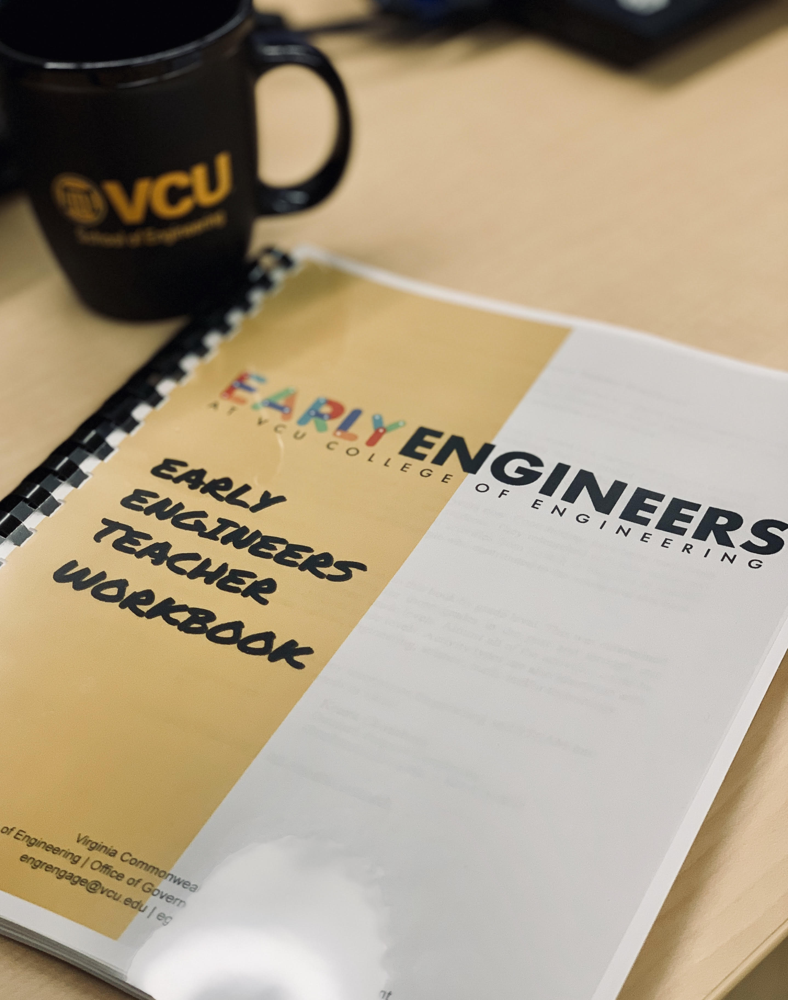

The VCU College of Engineering recognizes the importance of supporting Science, Technology, Engineering, Arts and Math (STEAM) curriculum at community schools. The College established the Early Engineers program as a no cost service to our public school partners, allowing educators to expand their access to STEAM resources. The Early Engineers program provides hands-on workshop sessions and activities centered on educating students and teachers about the Engineering Design Cycle.
Full Innovation Days
The Early Engineers program hosts Full Innovation Days at local public schools for all grade levels. Over the course of the day we interact with all students in the school. We discuss with students the impact of STEAM topics and participate in activities focused on the engineering design cycle. This is a great opportunity for students to understand STEAM and the application of it to solve challenges when faced with obstacles. Youth also have the opportunity to ask college student volunteers about their projects and experiences. This helps to expand student awareness and understanding of Engineering as a career. Dates are limited, so act fast and contact our office to schedule.

Mini-Innovation Days
The Early Engineers program also hosts Mini-Innovation Days at local public schools for 1-2 of the school’s grade levels. Just like with the Full Innovations Days, we lead hands-on STEAM activities focused on the engineering design cycle. Our volunteers work to help students increase their understanding of what engineering is and how they can build the problem solving skills necessary to succeed in STEAM.
Field Trips
VCU College of Engineering hosts field trips at the college for local public schools to learn more about what engineers do! This is an opportunity for students to apply the engineering design cycle through participation in fun activities that will inspire the inner engineer in anyone. Available dates are limited, so act fast and contact our office to schedule a field trip.
STEAM Nights
STEAM Nights are an interactive way for educators to host a vendor-fair style event that brings students and their families together by having them participate in activities that focus on STEAM topics as well as the engineering design cycle. This event by far is an event that will bring a community together while having fun learning about STEAM! The College of Engineering attends these events that are organized by the hosting public schools. We bring a hands-on activity that is engaging for the whole family and are available to answer questions from parents about engineering.